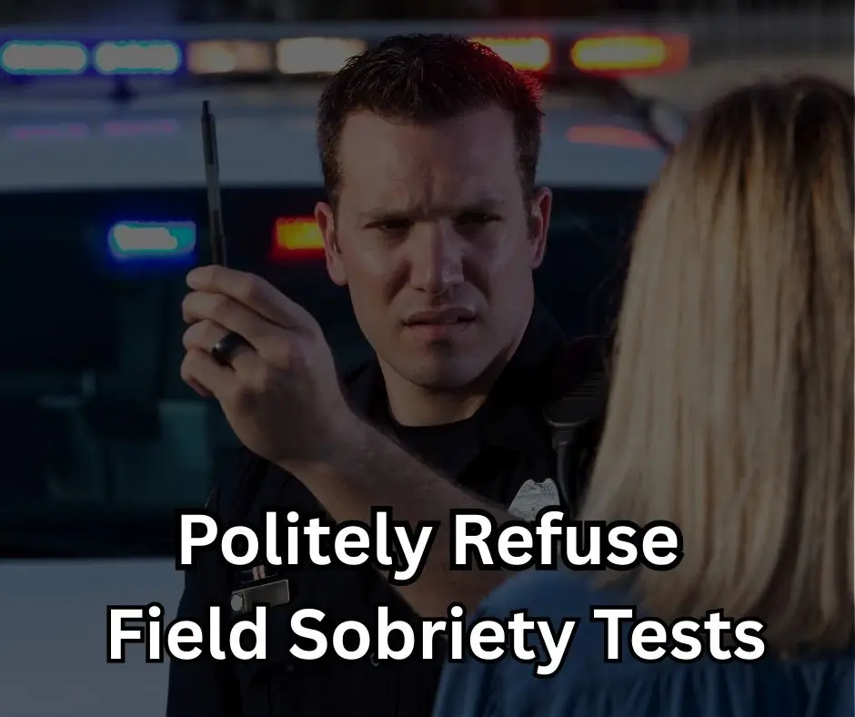

It's Perfectly Legal To Refuse Roadside Sobriety Tests In Florida
Published on by Jeff Lotter
When facing a traffic stop and suspected of DUI in Florida, one of the most critical decisions you'll make involves whether or not to submit to roadside sobriety tests (also known as Field Sobriety Exercises or FSEs). Many people are unaware of their rights in this situation. Let's clarify: **it is perfectly legal and often sound legal advice to politely refuse these roadside tests in Florida.**

What Happens If You Refuse Roadside Tests?
If you refuse to perform roadside sobriety tests, the officer is trained to inform you of the potential consequences of that refusal. They might say something like, "If you refuse, I am going to have to base my decision to arrest you off everything I've observed so far, and this refusal is one of those things. Do you understand?"
It's true that if you refuse, you will likely be arrested. However, it's crucial to understand a key point: **you were likely going to be arrested anyway.** The standard for probable cause for a DUI arrest is quite low. Observations such as the odor of alcohol, speeding, red/watery eyes, or swerving can often be enough for an officer to establish probable cause, even before roadside tests are conducted.
Why Refusing Can Be a Strategic Legal Decision
By politely refusing to take roadside sobriety tests, you are **limiting the evidence the State of Florida can use against you in trial.** These tests are subjective and often difficult for anyone to perform perfectly, even when completely sober. Factors like nervousness, physical limitations, or uneven ground can affect performance, yet officers may interpret any imperfection as a sign of impairment.
Your refusal denies the prosecution potentially damaging video and testimony regarding your performance on these exercises. While the refusal itself might be mentioned in court, it's often less damaging than a video of perceived poor performance on subjective tests.
"You were not arrested *because* you refused the roadside tests. You were likely getting arrested either way. Probable cause is such a low standard."
Roadside Tests vs. Chemical Breath Tests: A Critical Distinction
It's very important to distinguish between refusing roadside sobriety tests and refusing a chemical test of your breath (or blood/urine) *after* you have been lawfully arrested for DUI. These are two different things with different legal consequences:
- Roadside Sobriety Tests (FSTs/FSEs): These are the physical and cognitive exercises requested by the officer *before* an arrest. Refusing these is your legal right and generally does not carry an automatic driver's license suspension solely for that refusal.
- Chemical Tests (Breath, Blood, Urine): Under Florida's "Implied Consent" law, by driving in Florida, you have implicitly agreed to submit to a chemical test if lawfully arrested for DUI. **Refusing a chemical test of your breath, blood, or urine after a lawful arrest will result in an administrative driver's license suspension (typically 12 months for a first refusal, 18 months for subsequent refusals).**
Keep in mind that even with a suspension for refusing a chemical test, many people will qualify for a hardship license, allowing them to drive for essential purposes like work, school, or medical appointments.
Know Your Rights, Protect Your Future
Understanding your rights during a DUI stop is crucial. Politely refusing roadside sobriety tests is a legal right that can be a sound strategic decision in limiting evidence against you. However, the decision regarding chemical tests post-arrest carries different implications for your license.
If you have been arrested for DUI in Orlando or Orange County, it's vital to speak with an experienced DUI defense attorney as soon as possible. At Lotter Law, we can help you understand the specifics of your case, the implications of any refusals, and how to best protect your rights and future. Contact us for a free consultation.
Need Legal Help?
If you've been arrested for DUI after refusing field sobriety tests, you need an attorney who understands both sides of the law.
Get DUI Defense Help →